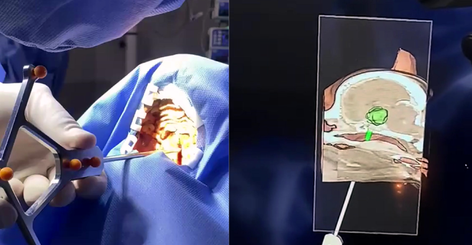
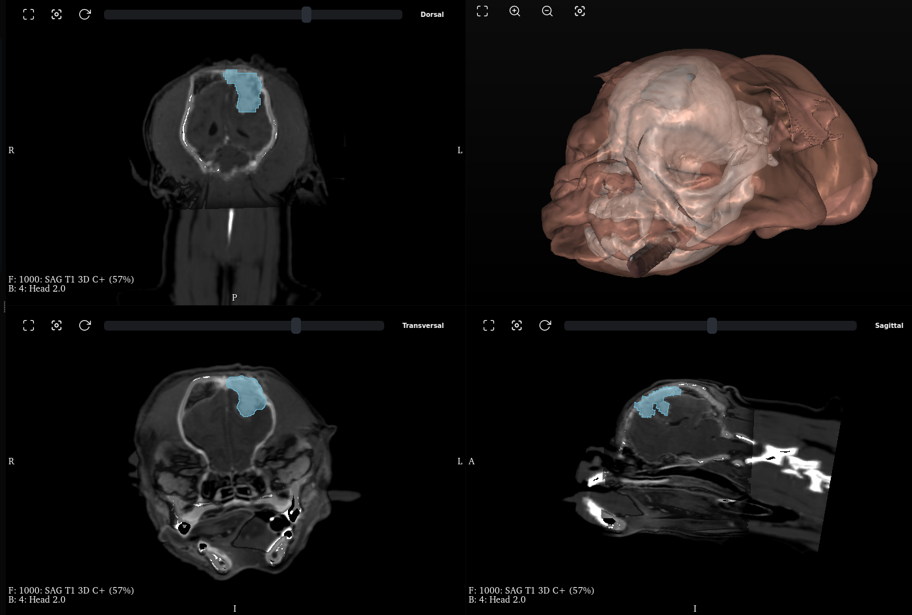
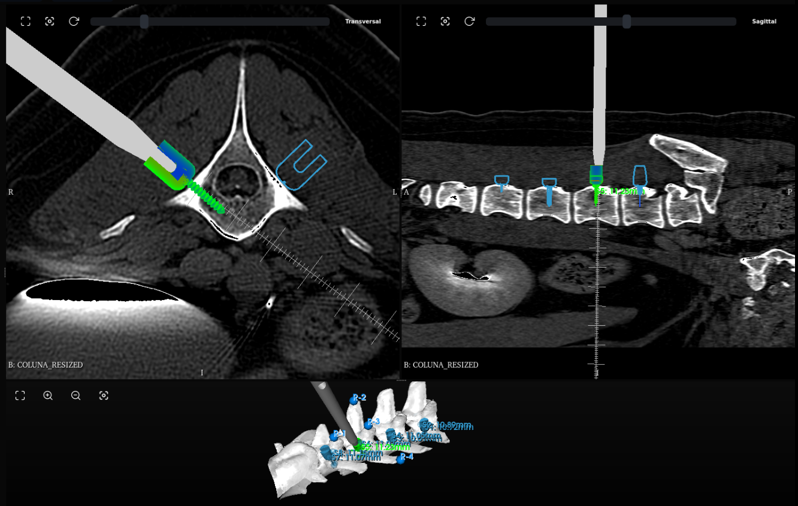
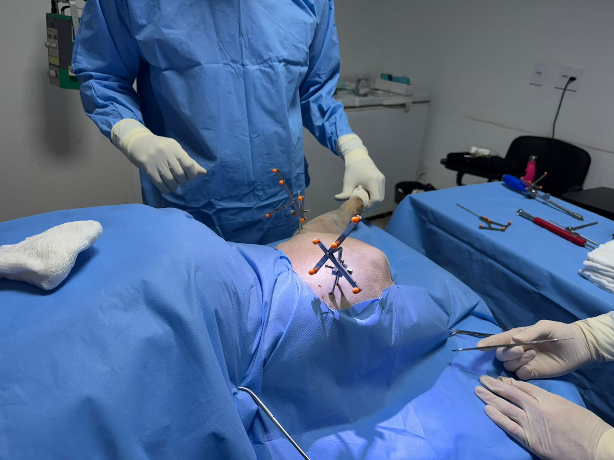

Diagnóstico
Fusão de Imagens
Combine imagens de diferentes modalidades (TC, RM) em um único exame, proporcionando uma visão mais completa e precisa da anatomia do paciente.

Desenvolvido a partir do Projeto Yara — sistema de assistência robótica à neurocirurgia em fase regulatória — o Orion One aplica mais de 6 anos de pesquisa cirúrgica à medicina veterinária de precisão.
O Orion One é um sistema de neuronavegação cirúrgica de última geração, projetado especificamente para a medicina veterinária. Ele funciona como um "GPS para o cirurgião", permitindo visualizar a posição exata dos instrumentos em tempo real sobre imagens de tomografia (TC) ou ressonância magnética (RM) do paciente.
Essa tecnologia transforma procedimentos complexos em cirurgias mais seguras, rápidas e minimamente invasivas, elevando drasticamente o padrão de cuidado e os resultados para neurocirurgias e ortopedia de precisão.

Navegue cada neurônio com precisão milimétrica.

Precisão milimétrica, vértebra a vértebra.

Cirurgias de quadril guiadas com precisão milimétrica.
O módulo Orion Hip está em desenvolvimento. Em breve estará disponível com todas as ferramentas para cirurgias de quadril de alta precisão.
Estamos trabalhando nisso.
O módulo Orion Hip está em desenvolvimento. Em breve estará disponível com todas as ferramentas para cirurgias de quadril de alta precisão.
Solicitar DemonstraçãoA opinião de quem já confia no Orion One
Disponível em locação anual ou venda direta. Descubra qual modelo se encaixa na sua clínica em uma demonstração gratuita de 30 minutos.
Solicitar Demonstração